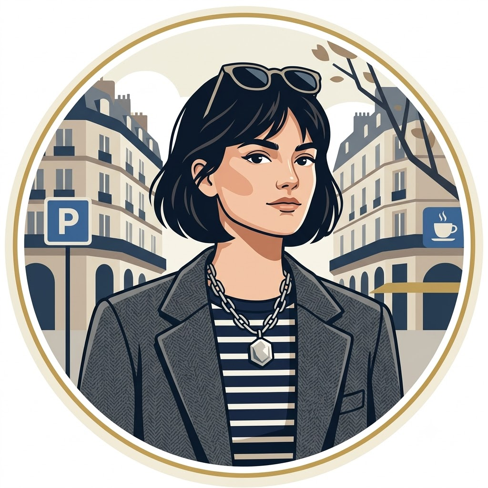

Bem-Vindos ao meu Closet Virtual!
Por: Idriene
Olá, pessoal! Sejam muito bem-vindos ao meu espaço! Criei este blog — com essa vibe inspirada em tons pastéis, rose gold e muita sofisticação — para ser o nosso ponto de encontro oficial para falar sobre moda de um jeito real, prático e cheio de estilo.
Por aqui, vou compartilhar as melhores dicas de looks, comentar as tendências das estações e mostrar como traduzir as passarelas para o nosso dia a dia sem complicação. Fiquem super à vontade para interagir e me contar logo de cara: qual é a peça de roupa ou acessório que não pode faltar de jeito nenhum no closet de vocês? 🌸✨👠